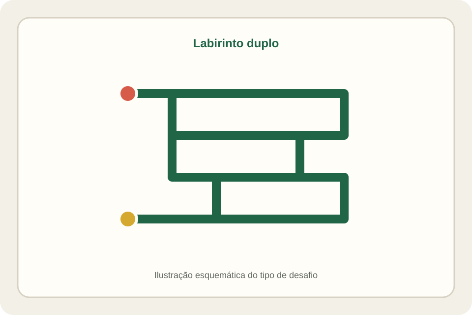

Labirinto Duplo Nigma M1
Percurso mecânico em dois níveis
Investigue a sequência de movimentos necessária para conduzir o pino pelo labirinto até a saída.

O desafio
O que observar neste jogo
O Labirinto Duplo é um desafio de percurso: é preciso acompanhar a posição do pino e perceber quais movimentos permitem avançar entre trechos do caminho.
A ficha propõe uma exploração sem solução fixa, pois o percurso e os movimentos permitidos devem ser confirmados no exemplar. Observar antes de mover ajuda a evitar tentativas repetidas sem estratégia.
Guia de ação
Como experimentar
- 1
Localize início e saída
Observe o percurso visível e procure identificar onde o pino começa e por onde parece ser possível sair.
- 2
Acompanhe cada movimento
Desloque o pino suavemente e observe se ele avança, recua ou encontra uma barreira.
- 3
Registre o caminho
Memorize ou anote os trechos já explorados para não repetir a mesma sequência sem uma nova hipótese.
- 4
Teste alternativas
Quando encontrar um bloqueio, retorne com cuidado até uma posição anterior e investigue outro caminho permitido.
Possibilidades educativas
O que a atividade pode mobilizar
Orientação espacial
Relacionar a posição atual do pino às possibilidades do percurso.
Raciocínio sequencial
Organizar movimentos em uma ordem que permita avançar.
Atenção e persistência
Observar bloqueios e usar cada tentativa para rever a estratégia.
“Pode mobilizar” não significa “desenvolve automaticamente”. A experiência depende da proposta, da repetição, do diálogo e das condições de participação.
Mediação
Perguntas que mantêm o problema aberto
- Em que ponto o percurso deixou de permitir o avanço?
- Que movimento anterior levou você até esse bloqueio?
- Como pode registrar os trechos já testados para evitar repeti-los?
Participação e acessibilidade
Formas de adaptar sem retirar o desafio
- Explore em dupla: uma pessoa movimenta o pino e outra acompanha o trajeto e verbaliza as hipóteses.
- Use uma folha para desenhar um mapa simplificado do percurso, se isso ajudar a acompanhar as tentativas.
- Dê pistas sobre a próxima região a observar em vez de indicar todos os movimentos.